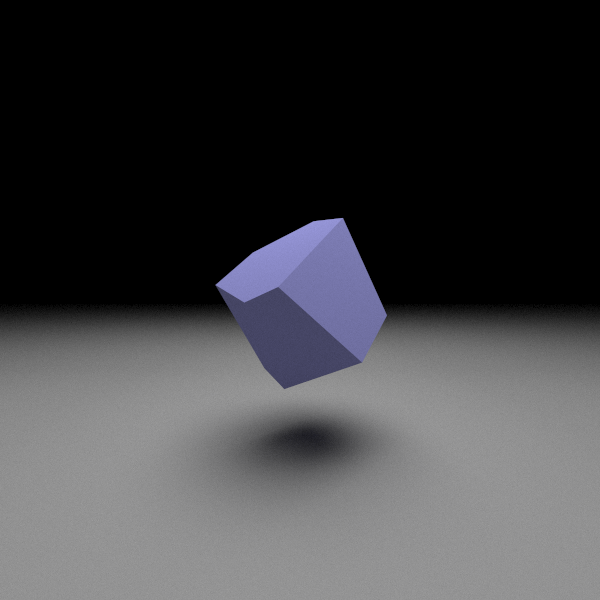
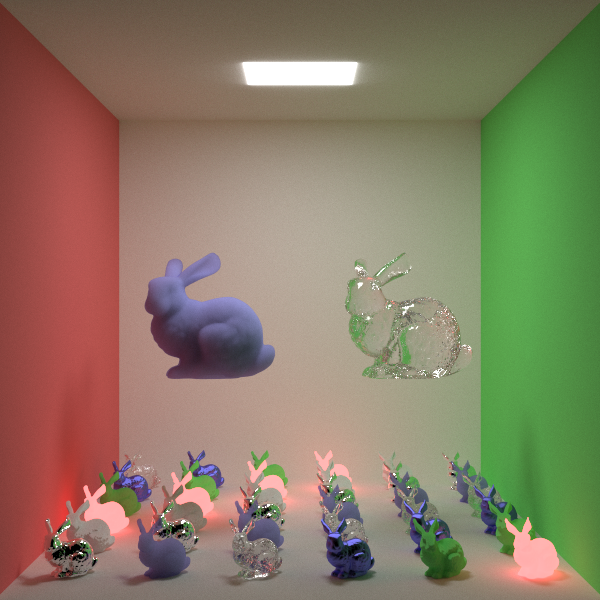
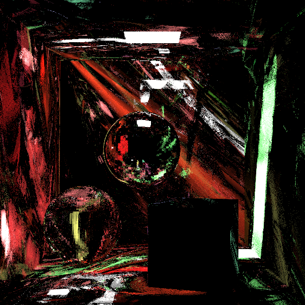
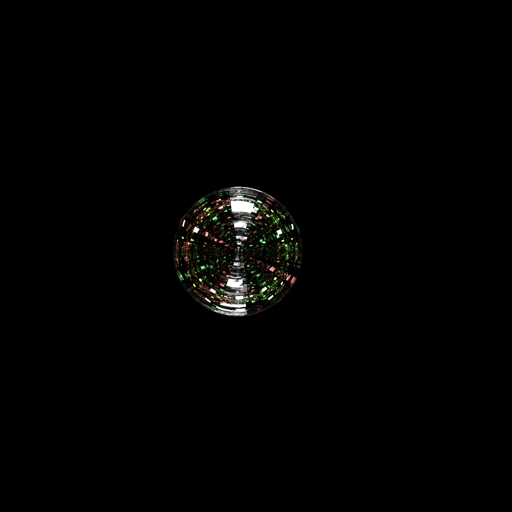

Ray tracing is a rendering
technique that simulates rays of light bouncing around a scene. It produces extremely realistic
images compared to traditional forms of rendering, but it can take hundreds of times longer to
render a given scene.
In this article, we will present a ray tracer written in pure python (without numpy or GPU
acceleration) that can work in arbitrary dimensional space, and describe how it works. Specifically,
we will present an unbiased, monte carlo ray tracer, otherwise called a
path tracer.
The full ray tracer can be downloaded here: RayTracer.py
By default, the ray tracer will render a quick, low quality version of the scene below. On a
low-end CPU, the render will take 20 minutes using PyPy, and 2 hours
using regular python.
The high quality render above is 600x600 pixels, has 1M triangles (500K per sphere), and uses
64K rays per pixel. It took 124 hours to render using PyPy and a separate, multithreaded version of
the ray tracer (here).
The left sphere exhibits glass refraction, the middle sphere exhibits reflection, and the cube
exhibits subsurface scattering.

The 4D scene above was rendered using render4d.py in raytracer_extra.zip.
It shows a rotated, blue hypercube floating above another hypercube acting as a floor. Both hypercubes
have the same material properties, however, the floor hypercube shows volumetric effects while the
blue hypercube is sharply defined. This difference could be caused by an error in collision
detection, or certain rays missing the floor in 4D.

38 instanced copies of the stanford bunny, each with different materials and transformations.

An impressionist style of rendering that is actually the result of a horribly biased random
number generator.

An improperly set epsilon in the ray-triangle intersection algorithm caused rays to become stuck
inside of the mirror sphere. This resulted in the infinite mirror effect seen above.
Overview
The major feature that this ray tracer presents is its ability to render arbitrary dimensional
scenes. That is, it can render in 3D, 4D, or any other number of dimensions. In this article, we'll
go over the main concepts that make up this ray tracer. In many cases, it will look exactly the same
as a normal 3D ray tracer.
In general, a ray tracer works by simulating rays of light bouncing around a world and recording
what rays end up in the camera. The hard part of a ray tracer is keeping track of the objects in the
world, efficiently checking them for collisions with a ray, and determining how a ray should bounce
off different materials such as glass or metal.
The building block of our ray tracer is the matrix/vector library. It simplifies the math we use and
allows us to more easily handle geometry in higher dimensions. The rest of the ray tracer is
organized around the "scene". The scene contains many things, such as the camera, the objects that
make up the world, how many rays per pixel we'll use, and how many times a ray can bounce around.
Here are the basic concepts of a scene.
Camera
Before we set anything up, we must go over the most important optimization we can make for our ray
tracer, since it will shape how we build the tracer. In the scene, there will be many sources
emitting light rays, but only a few percent of rays will ever reach the camera and the rest will be
discarded. Each of these rays take valuable computation time, so it is in our interest to discard
any rays which we will never see. Taking this into consideration, we can instead choose to emit rays
from the camera and see which ones hit a light source. This is sometimes refered to as "eye based"
ray tracing, and it allows the scene to have any number of lights without changing performance.
To set up the camera, we will give it the image pixel dimensions, camera position and direction, and
field of view. Using these values, we will calculate a virtual rectangle that will tell us where to
shoot a ray for a given (x,y) pixel coordinate.
By convention, we fix cz=-1. To calculate the exact values of cx and cy in the above diagram, we
take
Keep in mind: negative z values are in front of the camera, and positive z values are behind the
camera. Also, a typical value for fov in video games is 90 degrees. We now need to rotate the
(cx,cy,cz) coordinates to be in world space. Assume that camera_rotate is a rotation matrix set up
with the camera's angles. Then the world space coordinates of our camera's projection will be
camera_rotate=Matrix(z_angle,y_angle,x_angle,...)
bot_left=camera_rotate*Vector(-cx,-cy,cz,...)
right =camera_rotate*Vector(cx*2,0,0,...)
up =camera_rotate*Vector(0,cy*2,0,...)
We set up the vectors in 3D coordinates with unused elements being 0, and we use the rotation matrix
to point the camera properly in higher dimensions. Now, to shoot a ray for a given (x,y) pixel
coordinate, we simply translate the image coordinates into world coordinates like so:
Once a ray has been created, we will keep track of it as raypos+u*raydir, where u represents some
distance along the ray. We will consider the ray to hit an object if raypos+u*raydir intersects
some point of the object. In particular, the object with the smallest non-negative value of u will
be the next object that the ray hits. That is, it will be closest object that the ray can "see".
If no object satisfies this condition, then the ray disappears into the void. Otherwise, we update
its position with raypos+=u*raydir and continue bouncing the ray around. How the ray bounces off
of objects will be covered in the materials section, and how to find an intersection will be covered
in the mesh section.
It is important to note that rays bounce around the scene chaotically, and because of this they are
very noisy. A scene that is rendered by shooting a single ray per pixel will look more like noise
than a coherent image. To compensate for this, thousands of rays must be shot per pixel. This
obviously slows rendering down, however, it is also very easy to parallelize across any number of
threads. Most ray tracers will assign a different set of pixels to different threads since there
will be minimal memory contention.
Meshes
Every solid object in our scene will be a mesh of some sort. Meshes serve to contain collision
detection information, geometry faces, and material properties. A face, in particular, is the most
basic building block of a solid object's geometry. In a traditional 3D scene, a face would be a
triangle, and in 4D a face would be a tetrahedron. Every object we want to render will need to
somehow be broken down into faces in order for the scene to interpret the object. A 3D box, for
instance, would need to be broken down into 12 triangles before being added to the scene.
In order to make use of this geometry for determining collisions with rays, we'll first need to
establish normal vectors and barycentric coordinates.
Normals
Each face is made up of n vertices (points) and a normal vector, where n is the dimension we're
working in. The vertices simply define the boundaries of the face. The normal vector, however, is
used for our collision detection as well as determining what points are inside or outside the mesh.
A normal vector is simply a vector that points perpendicular to a plane. To define a plane in n
dimensions, we will need n-1 linearly independent vectors to decide a its direction, and 1 vector to
decide its offset. Hence, each face in our mesh should be capable of defining a plane and therefore
also defining normal vector.
Since, the normal is perpendicular to all points on a plane, we can use it to determine if a point
is on the same plane as the face. That is, if the normal*(p-offset)=normal*(v-offset), for some
point p and some face vertex v, then the point is on the face's plane. Using this, we can calculate
where along a ray's ray it will hit the face's plane and then perform an additional collision test.
In addition to coplanarity calculations, a face normal can be given a direction to determine which
side of the plane is outside the mesh, and which side is inside. By convention, all normals are set
to point towards the outside of the mesh. In our ray tracer, if a ray is colliding with a face and
the dot product raydir*normal is negative, then we will know that the ray is on the outside
of the mesh and pointing inwards. If the dot product is positive, then we are on the inside of the
mesh and pointing outwards.
Normal vectors can be calculated using a vector cross product. For 2D, the cross product requires 1
vector, and for 3D, the cross product requires 2 vectors. In general, we need n-1 vectors for an
n-dimensional cross product.
In 2D and 3D, the cross product can be expressed with a short, closed-form expression. For arbitrary
dimensions, however, we must calculate the determinant of a special matrix to find the cross
product. If v[0],v[1],...,v[n-1] are the vertices of a face, then the cross product can be
calculated like so
In this case, normalizing the cross product is optional, but it only needs to be calculated once and
it will let us avoid costly square roots in the main loop of the ray tracer. Note that face "normal"
and "normalize" are two different concepts here.
Now that we have the face normal, we can project the point p where the ray will hit the face's plane
using
The code also gives us the distance to the point p. Now that we have a point on the face's plane, we
will need to determine if it is inside the face's borders. The way we'll do that is with barycentric
coordinates.
Barycentric Coordinates
Given vertices v[0],v[1],...,v[n-1] barycentric coordinates are a set of scalar coefficients
u[0],u[1],...,u[n-1] such that u[0]*v[0]+u[1]*v[1]+...+u[n-1]*v[n-1]=p for some point p. That is,
they are a way of transforming a set of coordinates in global space into a set of coordinates in the
vertices' space. For a convex polygon, such as a mesh face, the coefficients will also have the
property u[i]>=0 for all i and u[0]+u[1]+...+u[n-1]=1 if and only if p is inside the face.
To calculate the barycentric coordinates, we repeat our beginning equations:
By setting p'=p-v[0] and w[i]=v[i]-v[0], we have u[1]*w[1]+...+u[n-1]*w[n-1]=p'. Applying the dot
product of vectors w[1],w[2],...,w[n-1] to this equation allows us to set up a system of equations
to solve for u.
Solving this system of equations is simple, but will be too time consuming to use for the billions
of face collisions we will be checking. Without knowing p, what we can do instead is calculate a set
of barycentric vectors. These vectors will be stored and then used to easily compute the barycentric
coordinates. Here is the matrix we will use for this.
That is, we multiply M^-1 by a column vector of vectors, which yields our set of barycentric
vectors. During collision, we can calculate the barycentric coordinates using the simple dot product
u[i+1]=bary[i]*(p-v[0]), given u[0]=1-u[1]-u[2]-....
With the normal and barycentric vectors of the face, we can now perform collision detection.
Collision Detection
Going over the previous subsections, we assume that we have a ray with a given position and
direction, and a triangle with normal and barycentric vectors. We now want to determine if the ray
intersects the triangle.
We'll first use the normal vector to project the ray onto the same plane as the face vertices. Then,
we can use barycentric coordinates to determine if that projected point is inside the face
boundaries.
def intersect(face,raypos,raydir):
#First, project the ray onto the face's plane.
den=raydir*face.normal
if abs(den)<=1e-20: return False
p=raypos-face.vertex[0]
dist=-(p*face.normal)/den
if dist<0: return False
p+=raydir*dist
#Make sure the barycentric coordinates of the point are within the face.
s=0.0
for bary in face.baryvec:
u=bary*p
s+=u
if u<0.0 or s>1.0:
return False
#We intersect the face at distance 'dist'.
return True
Instancing
Most scenes that comprise a game or movie are made of duplicate objects distributed throughout the
scene. Typically, ray tracers focus purely on rendering an array of triangles that they're given as
a way to simplify the ray tracer. This means that they lack any ability to efficiently store a
duplicate of an object in a scene. That is, if there are 2 duplicate meshes with a million triangles
each, then the scene will contain 2 million triangles.
Mesh instancing allows us to leave a pointer to a mesh in the scene, instead of all the mesh's
faces. How this works is by inserting a bounding box into the scene where the duplicate mesh would
be. If a ray intersects the bounding box, then we transform the ray into the original mesh's local
space and check for collision.
Inserting a bounding box will be made simpler with the introduction of the bounding volume hierarchy
described in a later section.
Transforms
When we place a mesh (or a mesh instance) into the scene, we will often want to rotate, shift, or
scale the mesh into a new orientation. There are many articles that describe rotation in 2 and 3
dimensions, but relatively few for arbitrary dimensions. Thus, we will cover it here.
All transforms that the ray tracer can perform are of the form p'=p*A+b for some matrix A and some
vector b. The matrix A holds all scaling and rotation information, while the vector b holds the
offset.
Rotation occurs along a 2D plane, *NOT* around an axis. One of the most common misconceptions when
working is 3 dimensions is to say "rotate around the X axis" or "rotate around vector V". This
terminology just so happens to work for 3 dimensions, but fails for all others. Instead, it would be
more correct to say "rotate along the YZ plane" for instance.
It follows that creating a rotation matrix in n dimensions will take n*(n-1)/2 angles. If a matrix's
elements can be accessed as a linear array, then we may rotate a matrix as shown below.
def rotate(elem,n,angs):
#Perform a counter-clockwise, right-hand rotation given n*(n-1)/2 angles.
angpos=0
for j in range(1,n):
for i in range(j):
cs=math.cos(angs[angpos])
sn=math.sin(angs[angpos])
angpos+=1
ival,jval=i,j
for r in range(n):
t0,t1=elem[ival],elem[jval]
elem[ival]=t0*cs+t1*sn
elem[jval]=t1*cs-t0*sn
ival+=n
jval+=n
Primitives
For the purposes of creating scenes easily, there are 2 geometric primitives we provide by default
in the ray tracer: cubes and spheres. The primary reason for choosing these primitives is that they
have analogs in all dimensions. Furthermore, their geometry is symmetric about each axis, so they
should be simple to construct.
Cubes
In dimension n, a cube will have 2^n vertices and 2*n! faces, although in 1
dimensional space each face is no different from a vertex.
Generating the vertices of the cube is simple. First, create vector with n elements. Then,
loop over all integers from 0 to 2^n-1. For a given integer, if bit position i
is 0, set element i of the vector to -1, otherwise set the element to 1.
for i in range(1<<dim):
v=Vector(dim)
for j in range(dim):
v[j]=((i>>j)&1)*2-1
addvertex(v)
Generating the faces, on the other hand, is currently an open problem to perform optimally.
The algorithm that we'll use exchanges simplicity for suboptimal performance. All that it involves
to find the vertices of a face is finding all v(0)<v(1)<...<v(n-1) for all
combinations of v(i) in {0,1,2,...,2^(n-1)-1}. For each combination, we'll create a face
using vertices on each separate side of the cube. Since there are 2*n such sides, and our
vertex selector generates (n-1)! faces, this yields 2*n! total faces.
sim=dim-1
combos,perm=1,[0]*sim
for i in range(sim): combos*=i+1
for f in range(2*dim):
#Given a fixed axis and side of the cube, generate the dim-1 dimensioned surface.
#Each surface will be made up of sim! simplexes.
axis=f>>1
base=(f&1)<<axis
for combo in range(combos):
for i in range(sim):
j=combo%(i+1)
combo//=i+1
perm[i],perm[j]=perm[j],1<<(i+(i>=axis))
#Find the vertices of the simplex. If the number of permutation inversions is
#odd, then the sign of the normal will be negative.
vertarr=[0]*dim
for i in range(sim): vertarr[i+1]=vertarr[i]+perm[i]
if vertarr[sim]>=self.verts: continue
addface(vertarr,mat)
If the number of inversions in perm is odd, then sign of the face normal will need to be
flipped depending on the parity of axis and f. However, determining the correct
orientation can be done more simply by making sure the face normal points away from the origin.
Spheres
By comparison to cubes, hyperspheres are abnormally hard to tessellate. Many algorithms that make
sense in 2D and 3D end up creating concave folds and creases in 4D+ spaces. In particular, the
geodesic algorithm for 3D sphere tessellation fails to translate to 4D.
We consider a mesh to be a hypersphere if:
•
All vertices are a distance of 1 from the origin.
•
All faces point away from the origin.
•
Any vertex not part of a face is coplanar or behind the face.
•
There are no holes in the mesh when looking outward from the origin.
•
As the number of faces increases, the surface area approaches that of the n-sphere.
From testing, there are only 2 methods that create a sphere satisfying these constraints.
One method is to generate random vertices on the unit sphere, attempt to spread them out, and
perform gift wrapping. This method has the problems of generating an unknown number of faces, it's
polynomial in time, and two successive calls will yield two different sphere.
The other method, and the one we use, is to extend the UV sphere algorithm for n
dimensions. The biggest problem with UV spheres is that the faces near the equator will be very
large, and the faces near the poles will be very small. In other words, a very uneven distribution.
However, it has a linear time construction and produces the same sphere if called twice.
Creating a hypersphere with the UV algorithm is conceptually simple. Assume we want to divide
each axis into k segments and that we start with a 1D sphere (a line). Then, to create a 2D
sphere, we rotate the 1D sphere along the XY plane. To create a 3D sphere, we rotate the 2D sphere
along the YZ plane, etc.
This can be seen more easily with a picture. To create a 2D sphere from a 1D sphere, we rotate a
line (a 1D sphere) around the XY plane:
To create a 3D sphere from a 2D sphere, we rotate a circle (a 2D sphere) around the YZ plane:
Rotating along the XZ plane would also work. For higher dimensions, there will be many planes to
choose to rotate along.
It should be noted that we choose the number of segments to be even. This allows the UV sphere to
have the same arrangement of vertices around each pole and avoid a flat a appearance at one of the
poles.
Materials
When a ray hits a face, we need to decide which direction it will go next and how its color will
change. For instance, if the ray hits a mirror, it should reflect off perfectly. But if the ray hits
a diffuse surface, it should scatter randomly.
One of the biggest differences between a ray tracer and a ray tracer is what a ray does when it hits
a face. A ray tracer that uses 1 ray per pixel will not really use 1 ray. At each point when a ray
hits a surface, multiple rays will be spawned going in different directions depending on the
properties of the material. In a ray tracer, no new rays will be spawned. Instead, at each
collision, the tracer will randomly decide which direction the ray should go next after calculating
the probabilities of different scattering phenomena.
Material properties, if done properly, should not depend on the dimension of the space we're working
in. At most, it should only depend on the relative angle of a ray and a face normal, which can be
calculated as a simple dot product. Thus we don't need to use any higher dimensional algebra in this
section.
Lights and Color
In the real world, the color of an object is determined by the wavelengths of light it emits. For
most objects, this corresponds to the wavelengths of light it reflects. So, an apple is red because
it reflects wavelengths in the red spectrum.
Since our ray tracer uses the RGB model of color that's common with computers and images, we'll need
to find a way to approximate how a ray of light changes its color. One way would be to convert the
RGB values into wavelengths, calculate what wavelengths should be reflected, and then convert back
to RGB. This conversion is more complicated that we want for an approximation, so instead we'll take
the multiple of the material's RGB values and the ray's RGB values as the new color of the ray.
for i in range(3):
color[i]*=material.color[i]
Each material will also have a luminosity value, AKA a brightness value. This is again a
simplification. In reality, a light source would emit different wavelengths of light with a random
probability. For the simplified model, a material's luminosity determines the magnitude of the light
being emitted from the object, and thus the intensity of the RGB values that would reach the viewer.
ret=[0,0,0]
for i in range(3):
color[i]*=material.color[i]
ret[i]+=material.luminosity*color[i]
At first glance, it might seem natural that luminosity values will be between 0 and 1. 1 being total
illumination, and 0 being total darkness. This will end up producing scenes that are extremely dark.
Instead, it is better to think of the luminosity as a way to overcome the ratio of rays that never
reach a light source compared to the rays that do. For instance, if only 1 in 30 rays will ever
reach a light source, the lights will need to have a luminosity of 30 for the scene to have an
average luminosity of 1.
Note that the fact that we're shooting rays from the viewer does not change the color that is
reported back. The calculations that we're performing would work the same when performed in reverse,
from the light's point of view.
Reflection
The most common interaction light has with an object is reflection. Indeed, when most people think
of light rays hitting an object, they also think of those rays immediately bouncing off the surface
of the object. One of the first objects people see in the morning, a mirror, also works off this
phenomenon.
When reflecting, the diffusion of the material determines whether it will be a perfect, mirror-like
reflection, or whether it will be a totally random, matte reflection.
Each material will have a diffusion value, between 0 and 1, that determines whether the surface acts
like a mirror or matte surface respectively. Although it is easy to calculate the new direction of
the ray when diffusion is exactly 0 or 1, it is much more difficult for any value in between. The
mathematically correct way to calculate the new direction would be to assign a pdf to each angle
depending on the diffusion and then randomly select the new angle for the ray. In 2 dimensions, this
calculation is fairly straight forward, given that there's 1 equation to solve with 1 unknown. In
higher dimensions, however, there will still be 1 equation to solve with multiple unknowns. Choosing
the new direction in this case becomes complicated and time consuming.
Instead, we simplify our diffusion calculation by linearly interpolating between perfect reflection
and matte reflection. The calculation is given below:
dot=raydir*face.normal
raydir+=face.normal*(2.0*dot)
rand=RandomVector()
if rand*face.normal<0.0: rand=-rand
raydir+=(rand-raydir)*material.diffusion
A common mistake when generating random unit vectors is to use a uniform random function for each
element of the vector. This will bias the vector towards the "corners" of the unit sphere when
normalized. Instead, the vector should be generated using a gaussian random function. The code for
this is also given below:
def RandomVector():
dim=3
vec=Vector(dim)
norm=0.0
for i in range(dim):
vec[i]=random.gauss(0,1)
norm+=vec[i]*vec[i]
vec/=math.sqrt(norm)
return vec
In the render at the top of the page, the sphere in back is a mirror with a diffusion of 0, and the
walls are perfectly matte with a diffusion of 1.
Refraction
The second most recognizable phenomenon of light is refraction. When light is refracted, it doesn't
bounce off the object as in reflection, instead it continues through the object with its direction
bent. This is what causes objects to appear to shift when looking through glass or water.
Refraction is something that occurs between two mediums, usually air and whatever object the ray is
hitting. How the light gets bend depends on the index of refraction of the two mediums, the angle of
incidence, and the angle of refraction. We label then idx0, idx1, ang0, and ang1 respectively.
They combine in Snell's equation as shown below. Here, the angle of refraction, ang1, is unknown and
must be solved for.
sin(ang0) idx0
--------- = ----
sin(ang1) idx1
The code for finding the new direction of refraction is:
cos0=face.normal*raydir
ior=inside_index/outside_index
disc=1.0-ior*ior*(1.0-cos0*cos0)
if disc>=0:
cos1=math.sqrt(disc)
refractdir=ior*raydir+(ior*cos0-cos1)*face.normal
else:
#reflect
When the discriminant, disc, is less than 0, we have a phenomenon called total internal reflection.
This is simply light bouncing off the inside of the object's faces instead of the outside. Diamonds
are cut in a particular way to maximize total internal reflection. The diagram below shows a basic
situation in which this can occur.
Note that in the ray tracer, for a ray passing through the object, we will be refracting twice. Once
when the ray enters the object, and once when it leaves. When the ray leaves the object, the inside
and outside indices will need to be switched, and the face normal will need to be reversed.
In addition the rays reflecting off the inside of the object, different wavelengths of light may be
reflected or refracted. These two different wavelengths are known as S and P polarized light. The
light that gets reflected here is what allows water surfaces to act like mirrors at the proper
angle. The proportion of light that gets S or P polarized is given by Fresnel's equations.
Because our ray tracer doesn't directly use wavelengths of light, we combine Rs and Rp to determine
the average probability that the ray will be refracted.
refractprob=1-(rs+rp)/2
Combining all of these effects gives us the following code for refraction.
cos0=raydir*face.normal
ior=inside_index/outside_index
if cos0>0.0:
#We're inside the face and pointing out.
norm=-norm
else:
#We're outside the face and pointing in.
cos0=-cos0
ior=1.0/ior
disc=1.0-ior*ior*(1.0-cos0*cos0)
if disc>0:
cos1=math.sqrt(disc)
refractdir=ior*raydir+(ior*cos0-cos1)*face.normal
#Fresnel reflectance equations.
a=ior*cos1;rs=(cos0-a)/(cos0+a)
a=ior*cos0;rp=(a-cos1)/(a+cos1)
refractprob=1.0-(rs*rs+rp*rp)*0.5
else:
#Total internal reflection.
refractprob=0.0
if random()<refractprob:
raydir=refractdir
else:
#reflect
Without invoking the wavelength of light, these are all the effects that we need to worry about for
refraction. In the image at the top of the page, the sphere on the left has the refractive index of
glass, which is 1.5.
Subsurface Scattering
When light penetrates the surface of an object, it doesn't have to be because of refraction. If the
material is porus to light, the rays will get inside the object and bounce around randomly until
finally exiting at some point on the object.
We first assume that the ray tracer knows that it is inside an object, either by spatial tests or by
tracking what surface it most recently went through. We now have a point inside an object, and wish
to scatter it and/or determine if it should leave the object. What we'll do is find the length to
the closest face in front of the ray, and also generate a random distance the ray should travel. If
the face is closer than the random distance, then the ray leaves the object. Otherwise, travel the
random distance and then decide a new, random direction for the ray to continue scattering.
To randomly generate the distance that a ray should travel before scattering, we'll use a random
distribution based off of the Beer-Lambert law. The distribution is
In the image at the top of the page, the box to the right demonstrates subsurface scattering.
BVH
If shooting rays from the viewer is the most important optimization, then bounding volume
hierarchies would be the second most important optimization. BVHs provide a way of quickly pruning
faces that a ray will never hit, allowing hit detection to take amortized O(log(F)) instead of O(F)
operations for F faces.
BVHs work just as their name implies. Boundaries are arranged into a hierarchy with a single root
boundary. If the ray hits a boundary, then we test the boundaries contained within it, and
eventually test the objects at the bottom of the hierarchy. If a ray misses a boundary, then we can
skip testing all the boundaries and objects below it.
Consider a BVH for the collection of objects below.
If a ray hits the red box, then we test each of the green boxes. If it hits one of the green boxes,
then we test the boxes it contains and so on until we test the objects of the scene.
In our ray tracer, the type of boundary used will be an axis aligned bounding box, or AABB. This is
simply a box that is shrunk to fit the points inside of it. AABBs provide decent results across
dimensions without taking too much space, computation, or complexity. Other common bounding types
are spheres and oriented bounding boxes.
The building block of the BVH is a node. A node will contain information such as child nodes, child
objects, and the bounding volume of everything it contains. Every BVH will have a root node that
physically contains everything in the scene, and it is where every collision traversal will start.
These nodes, when looked at as a hierarchy, make up the BVH. Our current problem is deciding how to
construct these nodes so that we can make collision tests as efficient as possible.
Construction
We'll construct the BVH by first creating a node that contains all objects in the scene. We'll then
attempt to partition the node into two sets of objects, and then further partition those sets. The
difficult part lies in deciding how to partition the objects, and when to stop. It is important to
note at the start that different BVH nodes are allowed to overlap, although we want to minimize
this.
For a given scene, there may be no universally optimal partitioning of the objects inside it.
However, the surface area heuristic (SAH) is the most widely used method that is quick to calculate
and produces good results. The SAH works by noting that the probability that a ray will hit a
boundary is dependent on the surface area of that boundary. We want to partition the scene in two so
that each partition balances its surface area with the number of objects it contains. In particular,
we want to minimize the following function.
Here, bvh_cost is a placeholder value to estimate the cost of testing collision with a node's
boundary during traversal; 0.1 is a typical value. We can demonstrate calculating the SAH below. The
scene to the left shows a partitioning that's not optimal, the scene to the right shows a
partitioning with a much lower SAH that looks much better.
To decide the optimal way to partition a group of objects, we first pick an axis and sort the nodes
along the axis by the centers of their bounding boxes. We now want to find a way of splitting this
sorted array into a left half and a right half with the most optimal SAH.
Calculating the optimal partioning of these boundaries can be done in linear time using two passes.
In the first pass, we start with an empty AABB and merge objects with it from the left to the right.
Before we merge an object's AABB, we record the value left_cost[i]=aabb.area*i which represents the
SAH cost of all objects before index i. We then perform the same operation going from right to
left, except we merge the object's AABB before calculating the right hand SAH. The left and right
SAHs for a given index can be added together and the minimal value recorded. We demonstrate the
left-to-right pass below.
The right-to-left pass:
A simple linear scan shows left_cost[3]+right_cost[3] = 2328+1256 = 3584 is the minimum SAH. Thus we
split at i=3, which yields partitions {0,1,2} and {3,4}.
The following python code shows the algorithm taken from the ray tracer.
def divideaxis(self,ltcost,left,right,lchild,rchild,axis):
#Sort nodes.
nodearr=self.nodearr
sarr=nodearr[left:right]
sarr.sort(key=lambda x: x.bbmin[axis]+x.bbmax[axis])
nodearr[left:right]=sarr
mincost,minhalf=float("inf"),left
#Find the total cost and area for nodes to the left of index i.
lchild.aabbinit()
for i in range(left,right):
ltcost[i]=lchild.area*lchild.cost
lchild.aabbmerge(nodearr[i])
#Find the total cost and area for the nodes to the right of i (including i). Then
#find the cost if we divided the nodes into [left,i) and [i,right).
rchild.aabbinit()
for i in range(right-1,left-1,-1):
rchild.aabbmerge(nodearr[i])
cost=ltcost[i]+rchild.area*rchild.cost
if mincost>cost: mincost,minhalf=cost,i
return (mincost,minhalf)
This partitioning will be performed for each axis to determine which one is best. If there is no
division that works better than doing nothing, keep all the objects as the node's child and stop
partitioning this subset of objects.
Traversal
Once the BVH is built, we can begin querying for the closest object that a ray hits. For a ray
query, we first start at the root node. If the ray intersects the root node, then we continue
testing its children until we hit an actual object. When we do hit an object, we record the distance
to it, and then backtrack up the hierarchy and continue testing. If we find another object that the
ray hits, we only record it if the distance is less than any previous hit.
It needs to be emphasized from the paragraph above that we don't stop querying at the first object
we hit. We need to continue querying until we are sure we have the closest object to the ray.
One small optimization we can perform is when choosing whether to traverse down the left or right
child node first. What we can do is record the axis used to partition the node during construction.
If the ray direction is positive on that axis, test the left child first. Otherwise, test the right
child first. This allows us to test the child that is more likely to have an object closer to the
ray first.
Most traversal implementations use recursion in their source implementation. In practice, this adds
function call overhead and also uses up the stack. Given the simplicity of our BVH traversal, it can
be done without recursion by tracking the node that we're at and the one we just came from.
Meshes
In order to support mesh instancing, each mesh will be given its own BVH. This allows a ray to be
reoriented into the mesh's space when the ray encounters a node containing a mesh instance. This
saves the cost and complexity of storing a mesh's entire BVH in whatever scene we want to embed it
in.
Because we use axis aligned boxes, however, we are forced to take a performance hit when creating a
mesh instance. The performance comes in the form of the space the BVH node's bounding box will take
if the mesh instance is rotated. Without performing the rotation on all points in the mesh, we
instead have to approximate them by rotating the vertices of the mesh's root bounding box and using
these vertices to construct the node's bounding box. This will end up inflating the size of the
node's AABB.
Notes
We have covered the overall implementation of a hyperdimensional ray tracer. In general, most of the
concepts are the same as a 3 dimensional ray tracer. The biggest difference manifests itself in the
matrix algebra we have to use. For a traditional ray tracer, most of the calculations, such as cross
products, can be explicitly written in a compact form. In arbitrary dimensioned space, we have to
resort to the general matrix formulas. Creating high dimension primitives, such as cubes, is also
unnecessarily complex.
I made this ray tracer hyperdimensional because I had trouble thinking about 3D geometry. So, I
decided that writing a renderer that was dimension agnostic would allow me to rely on the math
instead of mental visualization.
Spherical bounding volumes were not tested, but they may be competitive with AABBs in real world
scenes. They have the important advantage of not needing to expand for rotated mesh instances.
The example scene at the beginning of the article was rendered in python using PyPy. Python
multithreading is much less efficient than in C/C++. In particular, each separate process must have
its own copy of the scene, each process is slow to start up, and sharing values between processes
requires putting a synchronized value in the global scope.
GPU acceleration would be perfect for ray tracing, although the traversal logic may not play well
with GPU cores. A GPU implementation would most likely be several orders of magnitude faster than
the current implementation.
Although we call this a ray tracer, it is more accurately a
path tracer. Traditional ray tracing
will typically only have 1 sample per pixel and after the first bounce will check for occlusion with
the nearest light source. Path tracing, on the other hand, makes the distinction that it properly
approximates the rendering equation by using unbiased ray sampling and allowing the ray to terminate
without hitting a light source. That being said, a path tracer is still in the general family of ray
tracers and "path tracing" is a less clear name, so we call our renderer a ray tracer.
The RGB model of light we use is a carryover from traditional PC graphics. An improvement would be
to switch to wavelength based light. Diffraction would be implemented per pixel, since it is an
aggregate effect.
Random noise is an omnipresent part of ray tracing, given the fact that rays can randomly bounce
around and may never meet a light source. Reducing random noise requires increasing the rays per
pixel by an order of magnitude in order to be noticable. Denoising is a popular way to reduce the
noisy appearance of the image in exchange for approximating pixel values at a much faster speed.
Denoisers have the downside of sometimes making the wrong pixel approximation and making the image
look worse.